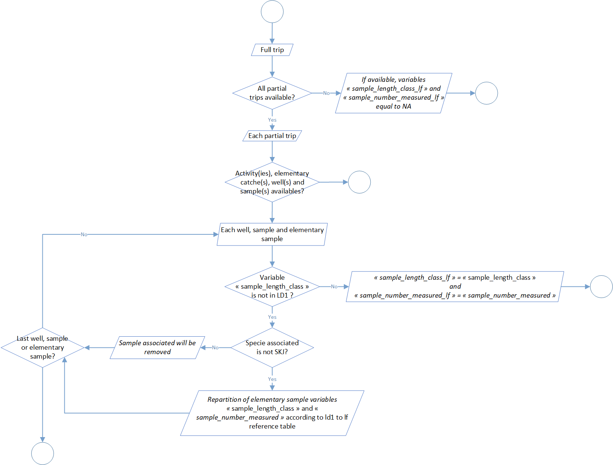

Samples standardisation
The second level of the t3 process aim to standardize samples data. These standardization was divided into 8 steps:
| Process | Code/method associated | Class(es) associated | ||
|---|---|---|---|---|
| Process 2.1: sample length class ld1 to lf conversion | sample_length_class_ld1_to_lf() |
full_trips | ||
| Process 2.2: sample number measured extrapolation | sample_number_measured_extrapolation() |
full_trips | ||
| Process 2.3: sample step length class standardisation | sample_length_class_step_standardisation() |
full_trips | ||
| Process 2.4: well set weight categories | well_set_weigth_categories() |
full_trips | ||
| Process 2.5: standardised sample creation | standardised_sample_creation() |
full_trips | ||
| Process 2.6: sample number standardisation | standardised_sample_set_creation() |
full_trips | ||
| Process 2.7: raised factors determination | raised_factors_determination() |
full_trips | ||
| Process 2.8: samples number standardisation at set scale | raised_standardised_sample_set() |
full_trips |
Process 2.1: sample length class ld1 to lf conversion

Process 2.2: sample number measured extrapolation

Process 2.3: sample step length class standardisation

Process 2.4: well set weight categories

Process 2.5: standardised sample creation

Process 2.6: sample number standardisation

Process 2.7: raised factors determination

Process 2.8: samples number standardisation at set scale